The man who taught the world to remember is being forgotten, and what survives of him is the fall, the last thirty years in the hundred-and-thirty-two-year history of one of the most innovative companies America has ever produced: Eastman Kodak.
This is the essay with its 568 saves and the author’s notes. Tap a paragraph to see it change.
What am I looking at ›
This is one essay and every save of it. The essay was written in August 2026 by Evan Monahan with Claude, and the file was saved 568 times along the way. Each paragraph on this page opens to show what changed at each save, and what the author wrote in the margin before it changed. Nothing here is a summary: the drafts are the drafts.
Forgetting the Man Who Manufactured Memory
Drafted with Claude (claude-opus-5 and claude-fable-5) in Claude Code, 3 to 21 August 2026
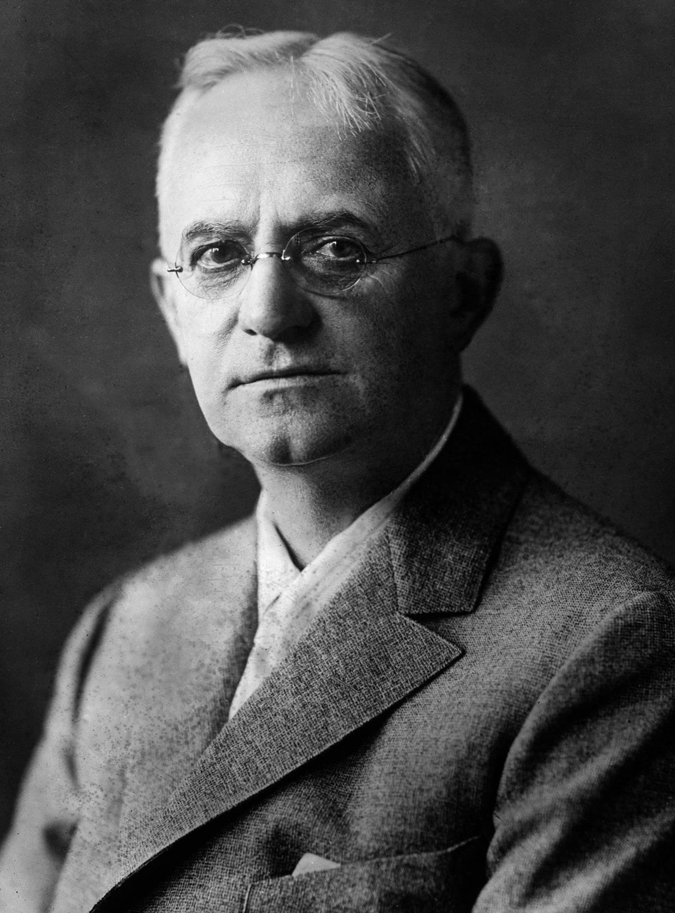
His name was George Eastman. He coined "Kodak" in 1888 because he wanted a name that meant nothing in any language and could not be misspelled, and he built it into one of the most recognized words on earth. It worked so well that the man disappeared inside it, and what the word calls up now is a story almost everyone knows: the company that turned photography from a profession into a birthright, so dominant it became a verb, too comfortable to see digital coming, undone by a future it would not look at. It is taught in business schools as the definitive cautionary tale.
It is not false. It is the ending, told as though the century before it had not happened and the improbable man who set it all in motion had never lived. The undeniable truth is that the century before it is where much of the modern world was built, and it was built in no metropolis: it was built in Rochester, New York, a modest city on the Genesee known mostly, when Eastman was born, for its flour mills.
SectionWe Do the Rest
1 note on this heading ›
The author, in chat · 08/20 13:25:46
1. I like you press the button, but does we do the rest fit better as a line here?
Eastman was born in 1854 in a village in upstate New York. His father ran a commercial college in Rochester that taught bookkeeping, penmanship, and the mechanics of trade to young men on the make, the nineteenth century's version of a business school. He died when George was seven and left debts, forcing his mother to take in boarders to make ends meet. The son left school at fourteen to work, and at nineteen he was a junior clerk at the Rochester Savings Bank, keeping books for seven hundred dollars a year and absorbing, through a bank ledger, the curriculum his father had sold in a classroom. He leaned on it for the rest of his life. There was no more school after that, and there was never any training in chemistry. The man who would one day spend a fortune on other people's educations never got one himself. When photography caught him, at twenty-three, he kept the bank's hours and then his own: experiments from three in the afternoon until breakfast, his mother finding him asleep on the floor in the mornings.
He did not invent the camera. He invented the customer. Before him, photography was an expedition. In his own telling, one did not take a camera anywhere in those days, one accompanied the outfit: a camera the size of a soap box, a tripod strong and heavy enough to support a bungalow, a dark-tent, glass plates, and a bath of silver nitrate, which he called the most awkward travel companion imaginable. A photograph was an expensive commission and a ceremony, and the person in front of the lens was almost never the person who owned the machine. He set out to change all of that.
Then he compressed all of it into one sentence and built the company inside it: you press the button, we do the rest. It was far more than an enduring slogan. It was the founding principle, the whole enterprise stated as a promise, and "the rest" was everything: the emulsion, the developing, the printing, the chemistry the customer would never have to see again. The first Kodak camera made the promise literal. It came loaded with film for a hundred shots, and when the roll was done the customer mailed the entire camera back to Rochester, where the film was developed and printed, a fresh roll was loaded, and the camera came home with the pictures. Keeping four words that simple required, behind them, what became the largest photographic manufacturing operation on earth.
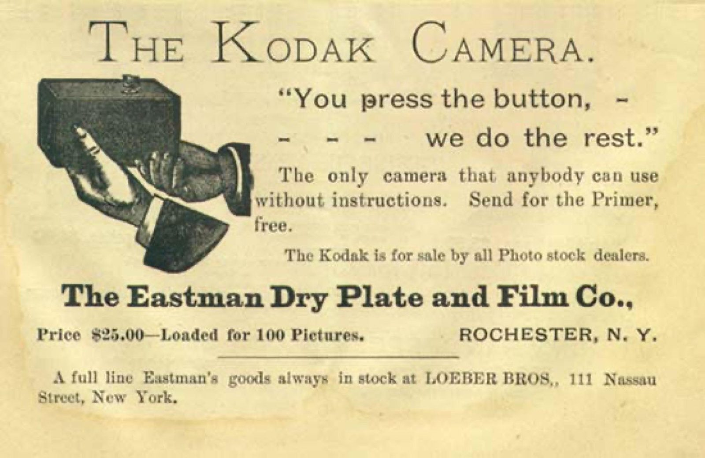
By 1900 the promise was fully kept, in the shape of a camera called the Brownie, named for a children's cartoon character and designed so a child could use it. It cost one dollar, about thirty-eight dollars today, and the film inside was fifteen cents a roll. He had taken the most difficult consumer technology of the nineteenth century, priced it as a toy, and put photography in the hands of the masses.
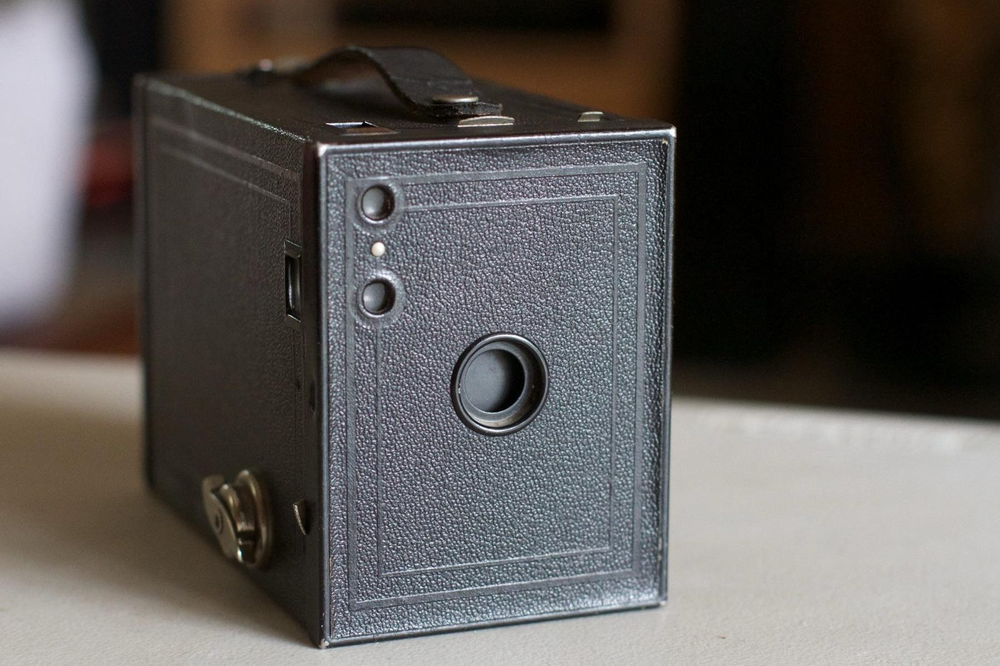
By 1927 the company from Rochester, New York was a global power: more than twenty thousand employees, ten thousand of them at home, factories in England, France, Germany, Canada, and Australia, and eighty-five percent of the American film market, eighty million rolls a year. Two thirds of the release prints in American movie theatres were struck on Kodak stock, and more than half of everything Hollywood shot in the first place was Kodak negative.
At the north edge of Rochester he built Kodak Park to make all of it, and it was less a factory than a small state: its own power plant, its own fire brigade, its own railway, eventually thirteen hundred acres and more than a hundred and fifty buildings, and later, in a basement, a nuclear device for testing materials. He had no wife and no children. When he decided where he wanted to be buried, he did not choose the family plot. He chose the factory. His ashes are at Kodak Park now, under a stone with a name and two dates, at the entrance to the place where the work was done, because the work was the only family he ever made.
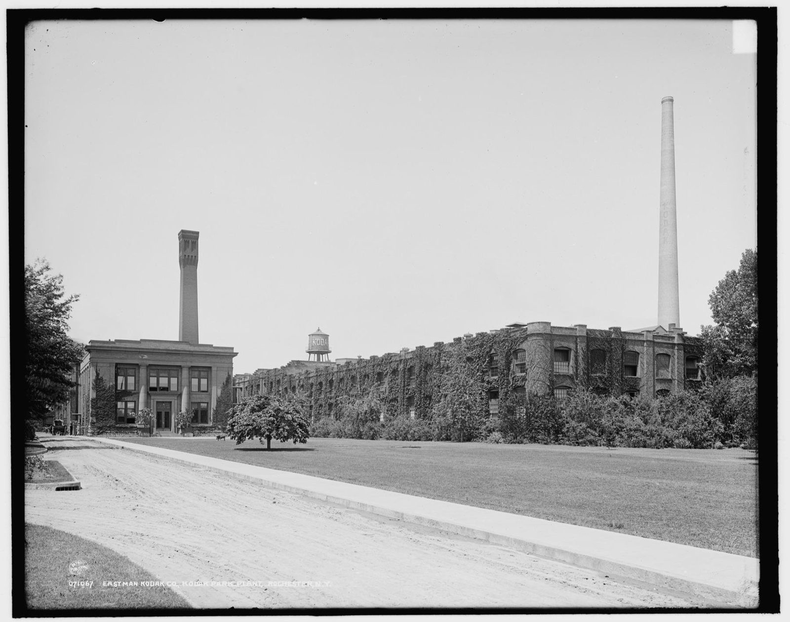
What the work bought was far more than a family album. It was the photograph as evidence, in courtrooms and in wars. It was the film in Robert Capa's two cameras in the surf at Omaha Beach on the morning of D-Day. Thirteen months later, in the New Mexico desert before dawn, when the first atomic bomb was tested at Trinity it was Kodak film that caught it. One hundred thousand frames of the fireball climbing, the very frames physicists used to measure what they had made. When Hillary and Tenzing reached the summit of Everest in 1953, the proof came down the mountain on Kodachrome. In December 1968 the crew of Apollo 8 came around the far side of the Moon and photographed the Earth rising over the lunar horizon, and Earthrise, made on Kodak film, became the way the species first saw its home from the outside. And when Armstrong and Aldrin walked on the Moon the following summer, every picture they made was on film coated in Rochester. Underneath all of it sat the ordinary human assumption, which nobody had before him, that you can believe a thing you have seen a picture of. He turned memory into an object you could hold, and seeing into testimony the world could trust, and he did it by putting the camera in nearly everyone's hands.
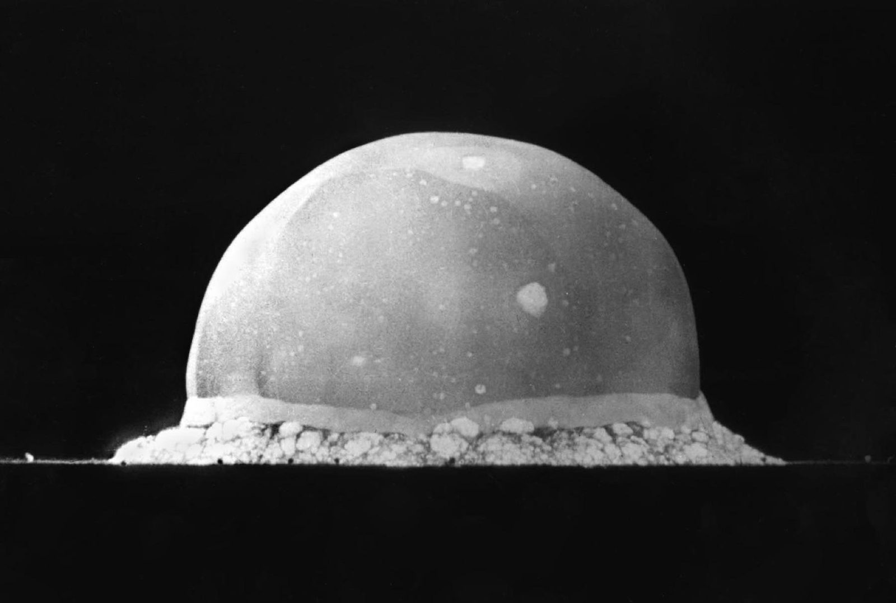
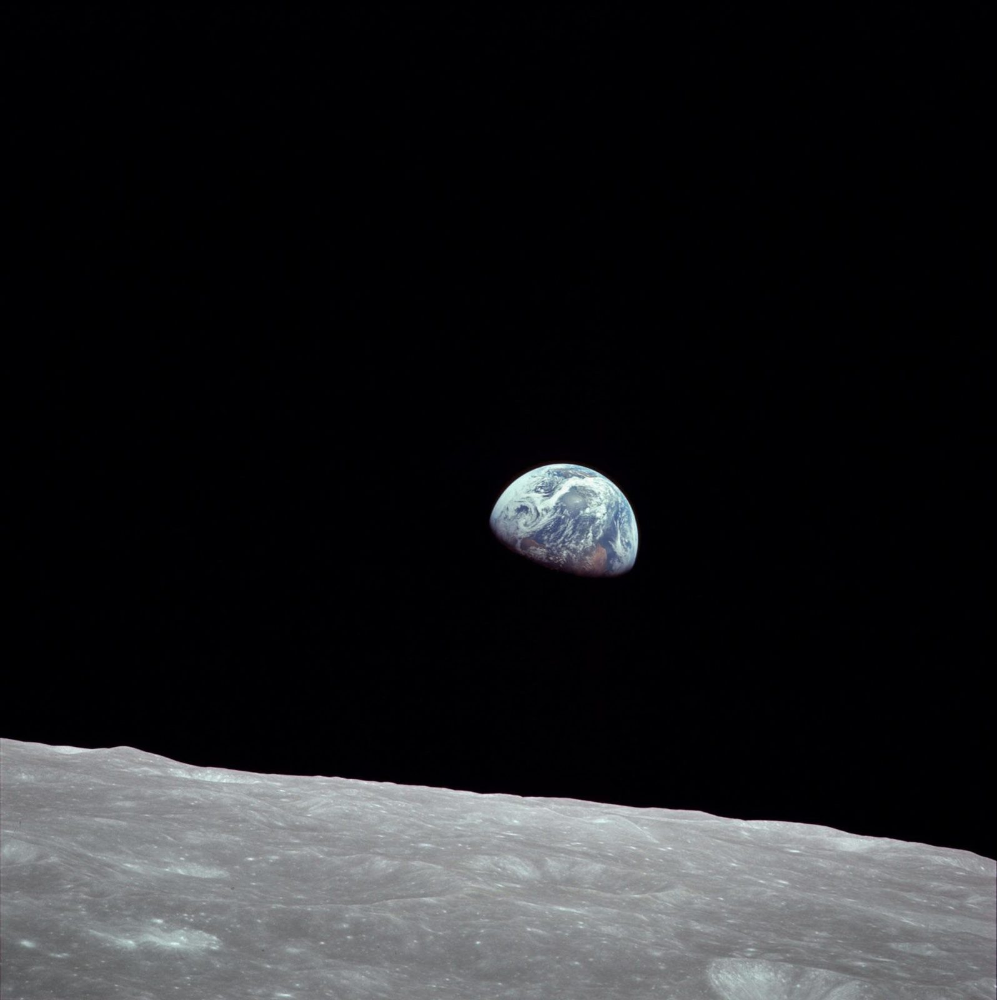
The bank years were not wasted. The bookkeeper understood business far better than he ever understood chemistry, and the business he designed is the one every school now teaches under another man's name. Give away the device, sell the consumable forever. He was running it in 1888 and wrote it down plainly: "Before the camera is dead, we ought to make at least as much from the film used in it as from the camera itself, probably more." King Gillette, who gets the credit, never did this. He sold his razor at a premium five dollars for the life of his patent and cut the handle price only in 1921, after it expired. Eastman does not seem to have minded. He was not in it for the credit, and the credit kept going elsewhere.
It went elsewhere with the movies too. Edison invented the motion picture, or near enough that history hands it to him. But his Kinetoscope was a cabinet you stooped over and looked into, one person at a time, a novelty to be defended rather than an industry to be built, and the Kodak film inside it came from Rochester. By 1908 Eastman had arranged the business so that everyone's film came from Rochester, with a small royalty flowing to Edison on every foot of it, pennies Eastman was glad to pay. Edison thought he was building a cartel. Eastman was building a tollbooth. One of them wanted to own the invention, and the other wanted to own the thing every invention would need.
Twenty years later, the tollbooth showed the inventor what it had paid for. On the afternoon of July 31, 1928, at his house on East Avenue in Rochester, Eastman gave the first public demonstration of color motion pictures. He had filmed his guests that morning. Now they sat and watched themselves move, in color, for the first time in the history of the world. Thomas Edison was in the room. He watched it and said: "It is entirely simple. I worked at it myself many years ago, but I made a failure of it." The most celebrated inventor in American history, admitting he could not do the thing the bookkeeper from Rochester had simply willed into existence.
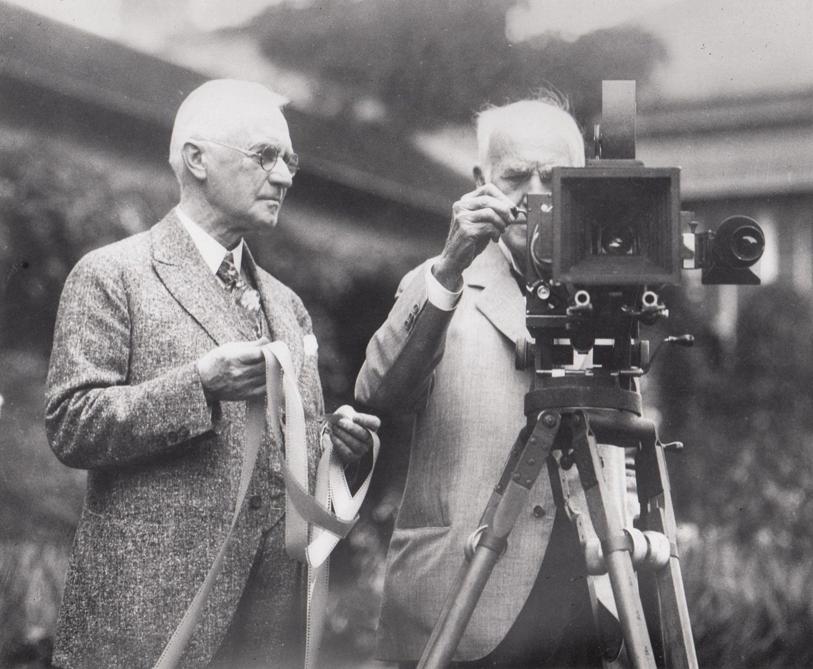
SectionImmortality, Declined
4 notes on this heading ›
The author, in the margin · 08/20 13:30:55
HEADER PICK — alternates: Immortality, Declined · Giving Without a Monument
The author, in the margin · 08/20 13:51:57
mmortality, Declined · Giving Without a Monument
The author, in the margin · 08/20 13:55:20
maybe a "Mr. Smith" heading here? it might not be needed with the imortality heading we chose above as this speaks to it
The author, in chat · 08/20 13:30:53
2. I like one place done completely and giving like a manufacturer. can we think of some other headings that speak to how he thought differently than the other philanthropists of his time and did philanthropy on his own terms, maybe something about his anonimity perhaps? 3 new options
The other men with fortunes that size bought immortality with them. Carnegie scattered his name across twenty-five hundred libraries in fourteen hundred towns. Rockefeller endowed a foundation that is still spending his money a century after his death. Eastman built no foundation, endowed no perpetuity. He built Rochester. He was betting that one place done completely was worth more than every place done a little, and the bet was never sentimental.
Kodak ran on chemists, physicists, lens grinders, and managers, and it had to draw them to a mid-sized city on the Genesee and then keep them there against every offer from New York and Boston. So the schools he funded trained his technicians, the university supplied his laboratories, and the hospitals, the parks, and the orchestra made Rochester a city that punched far above its weight. Rochester was as much an operation he ran as Kodak, and it is one more thing he built that others got the credit for: every company that has since put a campus where its people would want to live is running his play.
He gave the way he manufactured: directly, in volume, while alive, into things that operate. It came to something over a hundred million dollars before he was done, call it two billion today, and the largest share of it landed within a few miles of Kodak Park. When he died there was no machinery left running, because the machinery was never the point. The point was the city, and the city still collects. His gifts have outlived the company that paid for them: the university and the hospital he endowed are today Rochester's largest employer. That job used to belong to Kodak.
The first dollar that ever left Rochester, he sent under someone else's name.
On the evening of March 5, 1912, he sat down at the Hotel Belmont in New York with the president of a small technical school in Boston. It had opened with fifteen students. It was broke, and Harvard was maneuvering to absorb it. They talked into the night about a new campus across the Charles. Eastman asked what sum would be needed. Two and a half million dollars, the man said, call it eighty-five million today. Eastman said he would send a draft for that amount, on one condition: that nobody know who sent it. For eight years the president was permitted to say exactly two things about his donor. He did not live in Massachusetts. He had never attended the school. Inside its files he is simply Mr. Smith.
Eastman explained his rationale seven years in, and it was not modesty. "The only reason I ever had for withholding my name from connection with my original gifts to the Institute was to avoid the nuisance of the notoriety of big giving." Which is the whole man in one line. At home, his name over a door was operating equipment, one more working part of the machine that kept Rochester a city his chemists would not leave. Four hundred miles away the name operated nothing; it would only have bought him appeals, committees, and banquet invitations, and he had more important work to do.
He gave roughly twenty million in the end, something like half a billion in today's money, and asked for nothing: no name on a building, no publicity, no say in anything. What he thought he was buying, he put in writing:
*"I formed the opinion that there was no other place where a large sum of money could be invested with more effectiveness. That opinion has not since been changed in the least. I feel very strongly that the progress of this country is to be affected greatly by the men who are turned out of the M.I.T."*
The draft built the new campus across the Charles, kept the school out of Harvard's hands, and became the Massachusetts Institute of Technology: the school that went on to give the world radar and the guidance that flew men to the Moon. The case is not hard to make that a camera manufacturer from Rochester, writing under a false name to avoid an inconvenience, paid for what is arguably the most advanced technological institution on earth.
Back in that same year, 1912, he had bought a company in London in order to acquire one scientist, Kenneth Mees, and told him his job was the future of photography. Mees built the laboratory, and the laboratory built the color Eastman had been chasing for thirty years: the process demonstrated in his own house in 1928, and then Kodachrome in 1935. He missed the summit of the field he had brought into being by three years.
SectionThe Accounts in Balance
1 note on this heading ›
The author, in chat · 08/20 13:30:53
3. The accounts in balance
His mother had died in June 1907. She was the only woman who was ever at the center of his life, and by then he was one of the wealthiest men in America, and none of the money could do the one thing he wanted from it. In January 1905 she broke her hip on a dining room rug, and she spent her last two years being carried, and then wheeled, through the great house he had just finished building for the two of them.
The house itself was the truest thing he ever built about himself. From the street it was a Georgian Revival mansion on East Avenue; underneath, it was a factory. Because he had spent his life around nitrate film and chemistry that liked to burn, it was built to endure. The frame was steel-reinforced concrete, the walls and even the floors were fourteen inches thick, the roof was concrete, and steel doors could slide shut to seal off a burning room. It had its own power house, reached by tunnel, an internal telephone exchange with twenty-one stations, a vacuum system built into the walls, a master clock keeping every room on the same minute, and a dairy in the basement fed by his own cows out back. Other men's fortunes built palaces for display. His built a factory wearing a mansion's clothes.
And he ran it like one. The conservatory at the center of the house was the sounding chamber for his pipe organ, its pipes built into the walls in nine divisions around the room, and the room was square, which was wrong: wrong to the eye and wrong for the music. In 1919 he did not redecorate. He had the house cut in two and the entire rear half, twenty-five hundred tons of it, jacked nine feet four inches along rails until the room was right, for more than twice what the whole house had cost to build. Every morning an organist arrived, at seven in summer and seven-thirty in winter, to play him through breakfast while he did business. In that house even beauty ran on a schedule, and when it drifted out of spec, it got re-engineered.
Around 1930 his own spine began to fail, in what a doctor today would call lumbar spinal stenosis and what in 1932 had no name at all. He knew precisely what was coming, because he had watched it from inside that house: the wheelchair, the carried body, the two long years. A true man of action, who had planned every detail of every enterprise he ever touched, could see an invalid's years ahead of him, and he would not have them.
So he planned this too. On the afternoon of March 14, 1932, he signed his will in front of witnesses. Ninety minutes later he sent the household out, arranged the chairs in his bedroom, traced the outline of his heart where his doctor, asked once in passing a few weeks earlier, had shown him it was, laid a wet towel over the outline to muffle the sound, and fired once through it with a Luger automatic.
In the bookcase, where nobody found it until afterward, was a second Luger. The operator who had learned at twenty-five to keep a second way of doing everything kept one to the very end.
The note he left ran three short lines. To my friends: My work is done. Why wait?
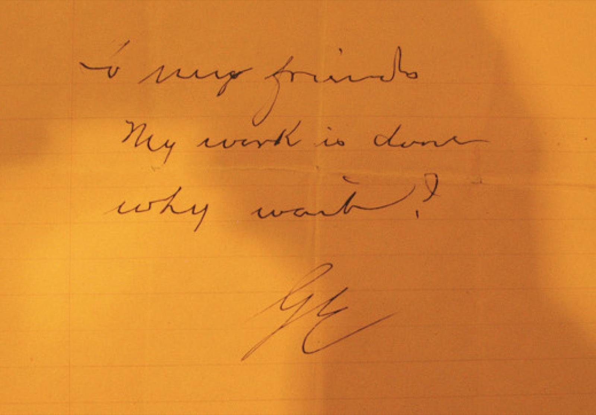
It was a bookkeeper's sentence, and he knew exactly what stood on the books. The work had never been the company. It was the promise on the box: you press the button, we do the rest. In 1877 a photograph had required a wagonload of glass and chemistry and a tent; by 1932 the camera was in the house, the album was on the shelf, and pressing the button was something a child did without thinking.
Below that entry sat the rest of it: the machine for keeping the promise, thirteen hundred acres of it; the laboratory that would deliver the color he had chased for thirty years, three years too late for him to see it; a city with his name over its doors and a school in Boston without it. What remained, running the company, defending the margins, riding out the Depression, was other men's work, of a kind he had spent thirty years training them to do. There was no heir on the ledger, because the ledger was the heir. He had audited his own life the way he had audited everything since he was nineteen, found the accounts in balance, and closed them.
SectionThe Undeveloped Years
2 notes on this heading ›
The author, in the margin · 08/20 13:30:55
HEADER PICK — alternates: Outside the Frame · The Classified Frames
The author, in chat · 08/20 13:30:53
4. I like the erased years, is there a way we can tie it to photography? 3 new options
The ledger did not stay closed. The accounts he settled that afternoon kept posting for another eighty years, and what they earned is the part of the story that has been erased. Tennessee Eastman, the subsidiary he had built to make his film base, operated the Y-12 plant at Oak Ridge for the Manhattan Project from 1943 to 1947, enriching the uranium for the same atomic bomb Kodak film had caught at Trinity.
Kodak made the film that flew in the U-2 over the Soviet Union, and in October 1962 it was Kodak film that came back from Cuba, developed overnight in Washington and laid on Kennedy's desk showing Soviet missiles under canvas: the photograph as evidence at the highest table there is, with the power to move navies. Kodak made the film for the satellites that replaced the U-2, whose capsules came out of orbit to be caught in midair by aircraft trailing hooks. One roll recovered in August 1960 covered more Soviet territory than every U-2 flight combined.
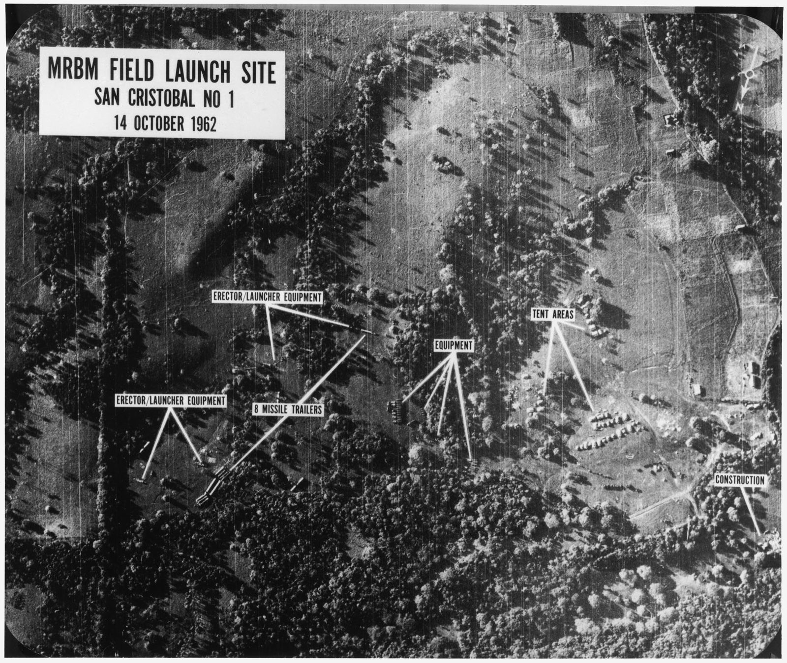
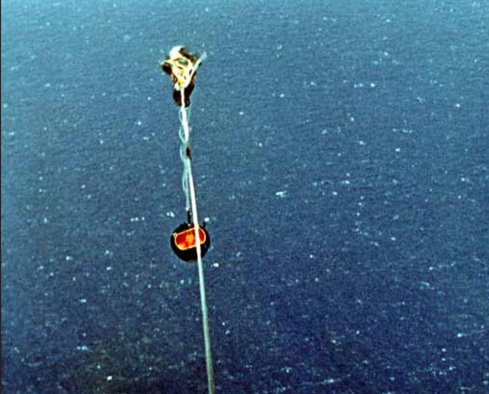
And in August 1966 there was a darkroom in orbit around the Moon. Kodak built the imaging system for NASA's Lunar Orbiter: it exposed seventy-millimeter film, developed it on board by pressing it against a web soaked in chemistry, scanned the negative line by line with a spot of light, and radioed the picture home across two hundred and forty thousand miles. On August 23, 1966, one of those frames became the first photograph of the Earth ever taken from the vicinity of the Moon.
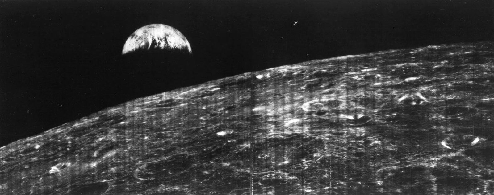
SectionThe Verdict from Orbit
1 note on this heading ›
The author, in chat · 08/20 13:30:53
5. No film at all and the verdict from orbit both shine here
That company is now a slide in a deck about incumbents who fail to adapt. The received account is not wrong. It is the last chapter, and it is the only one anybody teaches. And it erases more than the man. It erases the making of the technology that shaped the twentieth century, the story of how the world came to see itself.
It could hardly do otherwise, because the most interesting chapters were classified, some of them until the 2010s. In December 1975, in a lab in Rochester, a twenty-five-year-old Kodak engineer named Steven Sasson wired a new kind of sensor to a cassette recorder and built the first digital camera, and Kodak set it aside. In the same stretch another Kodak engineer, Bryce Bayer, patented the color filter array that lets a sensor see in color, filed months before Sasson's camera ever worked, and the company licensed it out to the industry while protecting film at home. Read that as cowardice and you miss it.
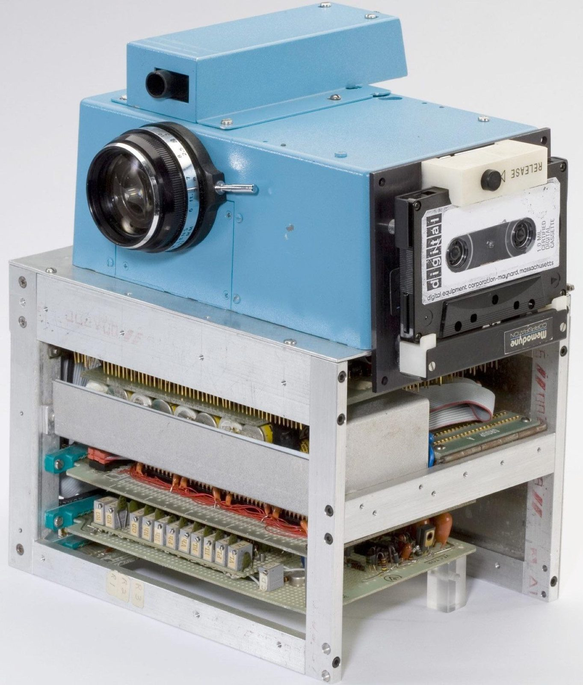
For one thing, the cowardice reading gets the date wrong. Digital photography did not arrive at Kodak in 1975 as a curiosity in a lab. It had arrived four years earlier as a verdict, from its best customer, in the one market where money did not matter. The government wanted its spy pictures faster than a parachute could bring them down, and by 1971 two answers were on the table. The Air Force proposed Kodak's: keep the film, develop it in orbit, scan it, radio the picture home, the trick Rochester had already flown around the Moon, now bolted to the best lens in space.
The CIA proposed to take the film out entirely and put a silicon sensor where the emulsion had been. On September 23, 1971, President Nixon chose the silicon, and the argument that won is sitting in the committee record: the new satellite's life would be limited only by its electrical power. Not by its film.
A film system stops when the film runs out. That is what a consumable is, and the consumable was the whole business. Eastman had written it down in 1888: before the camera is dead, we ought to make at least as much from the film used in it as from the camera itself. Eighty-three years later, his sentence was the argument that lost the contract.
The loudest scientific voice in that room belonged to a physicist named Edwin Land, the founder and chief executive of Polaroid, who also chaired the standing panel that reviewed the nation's reconnaissance for the White House. In 1957 Land had told the government that a satellite which developed its film and radioed the pictures down could not be made good enough to be worth building, and he was right. By 1969 his own panel certified that the silicon approach was ready, and by 1971 he was its most forceful advocate, warning that buying the film system would starve the future. Nobody alive had staked more of a life on the chemistry of photography than Land; the instant photograph was that stake in its purest form. And when his country's eyes were on the table, even he said: take the film out.
The satellite went up on December 19, 1976. It turned light straight into signal and relayed it home while the pass was still happening: no film, nothing to develop, nothing to catch falling out of the sky. The customer that had spent sixteen years driving Kodak to the frontier of emulsion chemistry no longer needed emulsion. Digital photography had been born at the edge of space, it had exposed the fault that would eventually bring the company down, and every bit of it was classified.
Kodak had lost one of the most lucrative contracts it had ever held, and it had lost it to digital photography, at what was arguably the culmination of everything Eastman had built. What nobody in Rochester thought to ask was: if a picture can be made with no film at all up there, what happens to everything we sell down here?
The answer, for thirty more years, was nothing, and every reason was individually sound: film margins ran roughly seventy cents on the dollar, and every digital move was self-harm on the balance sheet. The company did not fail to see what was coming. It saw it, built it, and decided it could not afford it.
Eastman would have recognized the shape of that, because a version of it had taught him photography. The man who first showed him how to work a camera, in an attic workshop in Rochester, was a patent attorney named George Selden. In 1879 Selden filed an application for a gasoline road engine, six years ahead of Daimler and Benz, and never built the car. He kept the application alive sixteen years by amendment and collected a fee on nearly every automobile made in America until Henry Ford beat him in court in 1911. He had the idea and made nothing. A century later, so did the company his student built.
But long before digital reached the consumer, Kodak had already met what it believed was the true threat to its business, and it had helped build that one too. Land had built Polaroid on an idea Eastman would have admired: a photograph that developed itself in your hand, the whole darkroom folded into a consumer product. Kodak had been his first customer, in 1934, and in time it did for him what it had done for Edison: it became the supplier, so that whoever owned the invention, Rochester would own the thing the invention needed. By the end, Polaroid was paying fifty million dollars a year, about four hundred and fifty million today, for the negative material inside every picture it sold. Then, in November 1968, Land showed Kodak the SX-70, a camera that developed its own picture in the open air, and Kodak's managers ran the numbers inside a month: the new system could cost them six billion dollars in roll film over ten years, more than fifty billion today, and there was no answer to build without licenses Polaroid would never grant. They decided to build one anyway.
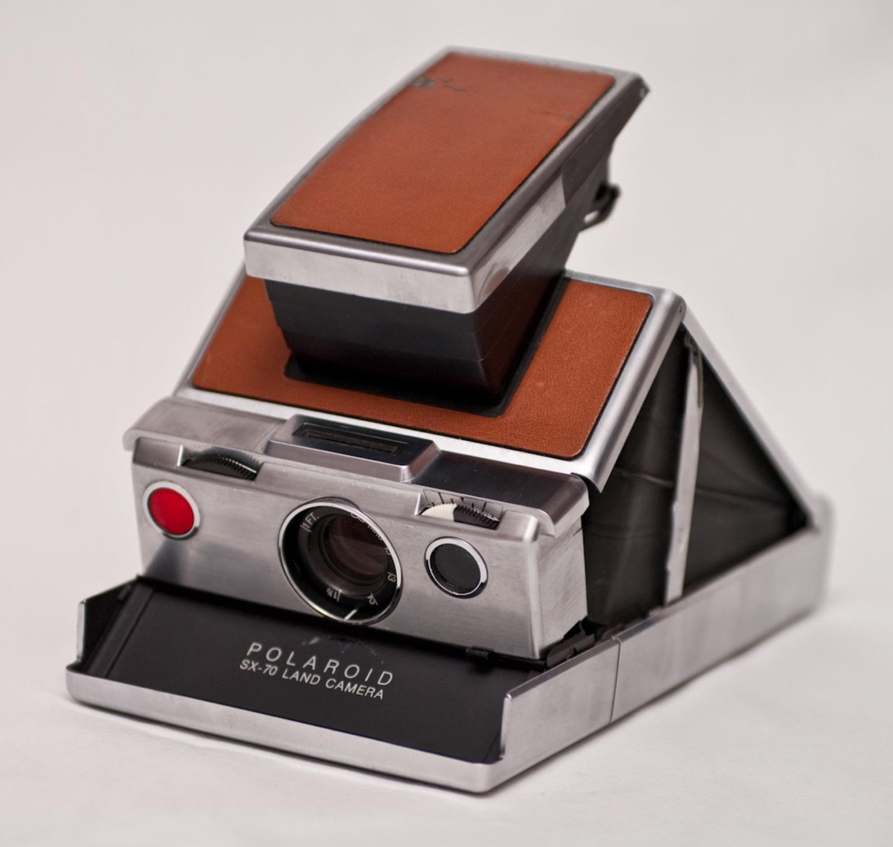
The following April, Kodak's chief executive terminated the supply agreement and left Polaroid to construct its own negative plant from nothing. The timing was ominous: these were the very years Land, in Washington, was certifying that silicon could replace film in orbit. It is the least remembered fight in American industry, and it opened a crack in Kodak during the most triumphant decade it ever had.
Kodak entered instant photography anyway in 1976. Land sued, and in 1991 Kodak paid nine hundred twenty-five million dollars, about two point two billion today and the largest patent judgment in American history for the next quarter century, out of cash. And then both empires died of the same thing, a photograph with no chemistry in it at all, on almost the same clock. Consumer film sales grew right up to their peak in 2000, fell by more than half in the six years after, and by 2010 the market was a tenth of what it had been. Polaroid filed for bankruptcy in 2001. Kodak, which had employed a hundred and forty-five thousand people at its peak, took seventeen thousand into Chapter 11 in January 2012.
Land's most devoted student was Steve Jobs, who called him a hero and built Apple on his model. It was Jobs's company that finally put a digital camera in a billion pockets, using the color sensor Kodak had invented and rented out. The shot Land fired at Kodak was finished by his student thirty years later. And his student's company came back for the remains.
On October 23, 2012, the last operations moved out of the Hawkeye plant in Rochester, ending a hundred and one continuous years of photographic work there. Two months later a bankruptcy court in Manhattan sold roughly eleven hundred of Kodak's digital imaging patents for five hundred twenty-five million dollars, a quarter of what they had been expected to bring. Apple was in the buying group, alongside Google, Facebook, Amazon, Microsoft, and Samsung. The companies that had become what Kodak was divided a century of Rochester's inventions among themselves, for pennies on the dollar. The estate of an American institution, sold for scrap.
SectionLatent Space
1 note on this heading ›
The author, in chat · 08/20 13:30:53
6.Latent Space
Here is the whole arc. A bank clerk binds the image to silver and sells it to everyone. The company he builds becomes the eyes of a nation and photographs the Earth from the moon. Then digital takes the chemistry out: unlimited pictures, instantly, for nothing, and no darkroom anywhere on earth. And now the AI models generate images with no camera whatsoever, and the last thing that made a photograph a photograph is gone.
That final step is the one that matters, and it is not the one people assume. A digital picture still had everything that made a photograph a photograph: a lens, light falling on a sensor, a moment that actually occurred. Nothing about the idea changed in 1975. What has changed now is that an AI model produces pictures with no lens, no light, and no moment that ever happened. There has never been a better time to tell the story of George Eastman and the history of Kodak, because the thing he started has just finished.
The part of a photograph that does the seeing is called the emulsion. It is a coat of gelatin holding crystals of silver salt, spread onto the base and dried, and it is the only thing in the whole apparatus that changes when light arrives. The lens aims and the shutter counts out the time. The emulsion is where the picture happens. Every factory Eastman ever built existed to lay that one layer down evenly, eighty million times a year, at a price a child could pay.
The models have no emulsion. Where their pictures come from is a mathematical darkness the field calls latent space, and the choice of words is almost too perfect, because latent is photography's oldest word: the latent image is the picture hiding in an undeveloped negative, written by light, waiting for the chemistry to bring it out. Same word, same dark, a hundred and forty years apart. Development brought out what light had already written. The models bring out what was never there.
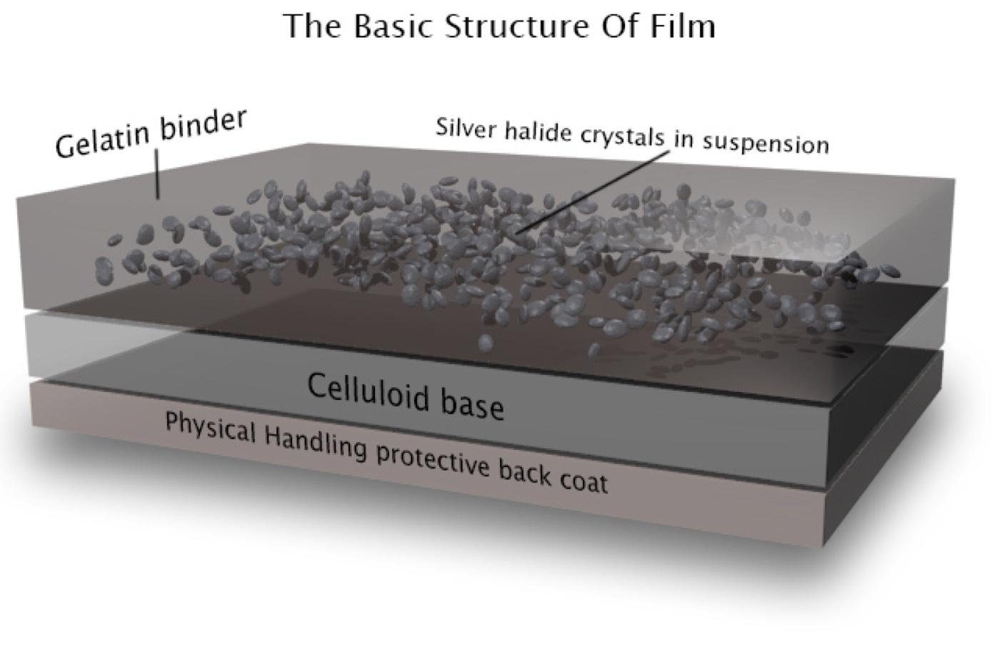
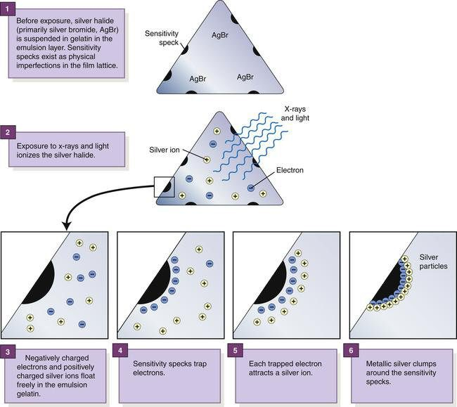
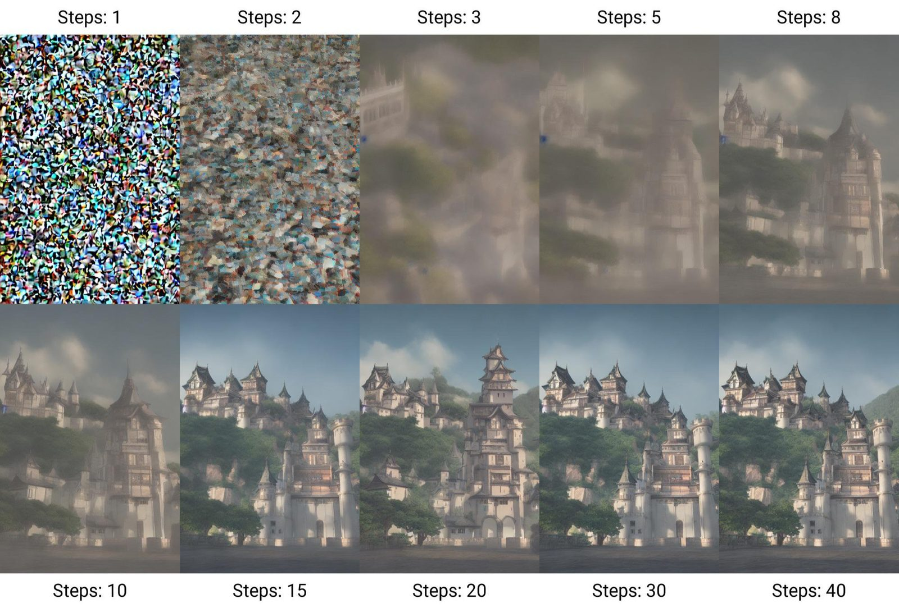
SectionThe Missing Portrait
1 note on this heading ›
The author, in chat · 08/20 13:30:53
7. The missing portrait.
Eastman had no children and no heirs, and the company was the last thing keeping his name in the world, and it is gone.
He was private in exact proportion to his fame, a man who spent his life behind the camera and signed the biggest gift he ever made with someone else's name. The one book that existed in his lifetime was written by a journalist he hired, financed, and edited, published two years before he shot himself, so it ends in triumph and cannot see the ending. Over the next forty years his company commissioned four more biographies and published none of them, acquiring manuscripts and shelving them one after another. They were not hiding a scandal. They were trying to perfect the portrait of a man who had spent his life perfecting pictures, and no version was ever good enough to release. That is why there is no portrait at all.
What is left is on a wall at MIT, in a corridor outside an examination room, a memorial he never saw and never approved, installed two years after he died. His profile in bronze, with his name, two dates, and three words: INVENTOR · INDUSTRIALIST · BENEFACTOR. Cut into the stone above it is what the school he quietly paid for found to say about him.
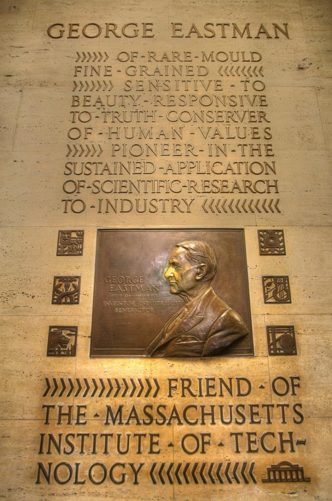
OF·
Now read the stone, line by line.
Of rare mould is the only line about how he was made rather than what he did, and a mould is the form a sculpture is cast in: the man who mass-produced the world's memory gets, on his own memorial, the word for casting one of a kind.
Fine grained is the size of the emulsion's silver crystals. The finer the grain, the more detail the negative holds and the further a print can be enlarged before the picture comes apart, and the price is patience: fine grain needs more light and longer exposure to make its picture.
Sensitive is the measured speed of the layer, how little light it takes to make it respond. Every stop of speed his chemists won moved the camera somewhere it had never been: out of the studio, into the surf at Omaha Beach, up the mountain, into orbit. Sensitivity is why the film was there when history happened.
Responsive is the physical event itself, silver reorganizing under light that actually arrived, which is the only reason a photograph was ever worth believing and is precisely what the models have now taken out.
Conserver is the work of the fixer, washing away everything the light did not touch so that what remains will keep.
Six lines of praise for a man, and four of them are the specification for the material. By 1934, in a country that had been buying his film for forty-six years, the words for the quality of a person and the words for the quality of a photographic emulsion had become the same words.
For ninety years the brightest technical students on the planet have rubbed the nose for luck on their way in to be examined. It is worn to a gold shine and the rest of him is dull bronze, and almost none of them could tell you what the man built.
DraftsBefore the essay
Two documents came before the essay, both written on the evening of 3 August 2026: the plan (19:38 to 20:43, 21 saves) and the outline (20:12 to 22:15, 72 saves). The record’s 568 saves begin at 22:17, when the outline was carried whole into the essay’s first save; these two documents are not among them. The author’s 36 notes in them, 11 and 25, are counted apart from the essay’s 248 notes.
The outline and the plan as plain text, and the thesis candidates, on their own page ›
Open the two documents ›
DraftsWhat was cut
Passages the author’s notes stood on that have no home in the published essay, with the notes as he wrote them. 7 passages, read from the record’s hand layer. Every sentence that was cut, by save ›
He gave away the bulk of a fortune while he was alive rather than leaving a foundation behind him, and much of it anonymously. His first recorded gift was fifty dollars, in 1887, to the Mechanics Institute in Rochester, at a time when his own salary was under sixty dollars a week.
The author, in the margin · 08/04 12:29:41 · gone by 08/04 13:31:20
What did his future gifts to RIT look like? what did RIT go on to do in terms of breakthroughs?
RIT gifts cut; only p15's 'schools he funded' remains · the author: cut out
It is not a defense. He funded eugenics, hired Pinkertons to spy on competitors, dissolved an entire department rather than accept a union. and built a film chemistry calibrated for white skin that was inherited by digital firmware and then by the AI models. Frederick Douglass sat for more photographs than any American of the nineteenth century, more than Lincoln, and argued in lecture after lecture that the camera would make Black humanity impossible to deny. He did it in Rochester, in the years Eastman was a boy there. Eastman was also, in the 1920s, the largest single donor to Black education in America, and his authorized biography carries a footnote stating that those gift figures were purposely eliminated from the volume. That book was published two years before he shot himself, which means the only version of his life that argues anything ends in triumph, cannot see the ending, and had the giving taken out of it.
The author, in the margin · 08/04 12:46:30 · gone by 08/04 13:31:20
We need to introduce Douglas first then talk aobut the film chemistry. how much were people aware of this issue back then? how about tuskeegee gap in his book?
Douglass/eugenics cut; only chunk's biography tail survives in p56 · the author: cut entirely
The author, in the margin · 08/04 12:47:33 · gone by 08/04 13:31:20
lead with the fact Douglas was a rochesterian
Douglass material cut entirely; chunk tail survives in p56 · the author: cut
The author, in the margin · 08/04 12:49:35 · gone by 08/04 13:31:20
we need to discuss that Brayer, the definitive biography of him was published in 1996 - Kodak was performing well financially but the cracks digital was exposing were rapidly expanding (not sure if that is an accurate portryal but the point is she did not have the full context of digital yet)
Brayer not in final; biography discussion lives in p56 · the author: cut
The author, in the one-pager · 2026-08-03 20:36
after “His authorized biography deletes all of it, and it was published two years before he shot himself, which means the only version of his life that argues anything ends in triumph and cannot see the ending.”
the modern biography released in 1996 when digital was rounding into full form
Never answered · Never entered the one-pager.
cut material, shown with the passage it was about · placed by reading; ruled by the author, 9 September 2026
At MIT there are two of him. One is an oil portrait he agreed to sit for in 1926, on the single condition that the painter not require too many sittings . It hung in the president's office for decades and is now in storage. The other is a bronze face bolted to a corridor wall two years after he died, which he never saw and never approved, outside a room where students take their exams. On the way in, they rub the nose for luck. They have been doing it for ninety years. The nose is worn to a gold shine and the rest of him is dull bronze, and almost none of them could tell you whose face it is.
The author, in the margin · 08/04 14:55:20 · gone by 08/04 15:01:07
THe man responsible for photography likely had limited patience for this art form
Chunk's bronze half is p66; portrait sentence cut · the author: the MIT portrait, cut
What is left is on a wall at MIT. There is an oil portrait he agreed to sit for in 1926, on one condition, which was that the painter not require too many sittings. The man who put a camera in every household in America had no patience for sitting still while somebody made a picture of him the slow way. It hung in the president's office for decades and is now in storage.
The author, in the margin · 08/04 15:14:04 · gone by 08/04 15:32:06
don't think we need to portrait but will wait to see what /story says
Opening sentence survives as p57; portrait dropped · the author: the MIT portrait, cut
He had no patience for the old way even in his own case. When he finally agreed to sit for a painted portrait, in 1926, he attached one condition, which was that the painter not require too many sittings.
The author, in the margin · 08/19 13:13:55 · gone by 08/19 13:14:27
remove this sentence entirely
Portrait sittings paragraph removed · the author: the sentence is the MIT portrait paragraph's second sentence at state 235 ('When he finally agreed to sit for a painted portrait, in 1926…'); the paragraph was removed entirely
The author, in the margin · 08/19 13:14:27 · gone by 08/19 14:19:39
remove this paragraph entirely
Portrait sittings paragraph removed · the author: the paragraph on Eastman sitting for the MIT portrait, removed entirely
The author, in the margin · 08/19 13:20:50 · gone by 08/19 14:19:39
remove this paragraph entirely
Portrait sittings paragraph removed · the same MIT portrait paragraph as c117, re-noted at state 253 (the author was unsure; the state body shows it)
The one real biography arrived in 1996, written independently and written well. It was published in the single best financial year Kodak ever had, sixteen billion dollars in revenue, with the digital camera already twenty-one years old inside the building. She could not have known what she was standing on.
The author, in the margin · 08/19 13:45:36 · gone by 08/19 14:19:39
this biography does not see how rapidly digital would destroy kodak
1996 biography sentence cut; p56 keeps only earlier biographies · the author: removed entirely
Built from the edit record of 2026/09/14. A paragraph’s drafts are every save in which its words changed; each sentence is followed save by save, so a draft can say what was reworded, new, cut or moved; the notes are the author’s own, placed on their paragraphs by hand; a chat line is joined to a save by the time it was sent. A save is cited by its permanent number, assigned when the record was first built and never reassigned; the record counts 568 saves after 19 that only opened an empty note were folded into the save before them. Nothing on this page changes the record or the essay.